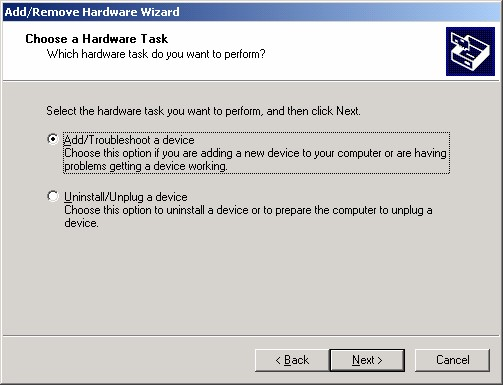

2 Menginstal Kartu Jaringan
Menginstal kartu jaringan, prosesnya mudah, sebab tersedia dua wizard yang akan
membantu, yaitu Add/Remove Hardware Wizard dan Found New Hardware
Wizard. Langkah yang diperlukan adalah:
1. Tutuplah Windows 2000 Professional lalu matikan komputer.
2. Pasanglah NIC pada slotnya, jangan lupa untuk memasang mur penguncinya.
3. Setelah NIC terpasang dengan benar dan kuat, nyalakan lagi komputer Anda dan
aktifkan Windows 2000 Professional.
4. Begitu Windows 2000 Professional Anda jalankan, sesaat kemudian muncul Add New Hardware Wizard.
Gambar 1.1 Add New Hardware Wizard
5. Jika Add New Hardware Wizard tidak tampil, bukalah Control Panel, lalu klik
ganda icon Add/Remove Hardware.
Gambar 1.2 Icon Add or Remove Programs
6. Muncul kotak dialog Add New Hardware wizard seperti Gambar 1.1 di atas.
Lalu klik Next, tampil pilihan tugas Add New Hardware Wizard. Tersedia dua
pilihan, menginstal hardware baru atau menghapus haerdware yang ada.

Gambar 1.3 Dua pilihan
7. Jangan ubah pilihan pertama yang sudah aktif. Klik Next, proses plug and play
dijalankan.
8. Setelah menemukan hardware, akan dijalankan wizard baru yang akan mencari
driver-nya. Yaitu Found New kotak dialog terakhir Add/Remove Hardware
Wizard Hardware Wizard, Gambar 1.5.
Gambar 1.5 Kotak dialog Welcome to the Found New Hardware Wizard
9. Klik Next, muncul kotak dialog Install Hardware Device Drivers , yang
menampilkan pilihan arah pencarian driver. Gambar 1.6.
Gambar 1.6 Ko tak dialog Install Hardware Device Drivers
10. Masukkan CD driver kartu jaringan tersebut lalu klik Next, muncul kotak dialog
Locate Driver Files.
Gambar 1.7 Kotak dialog Locate Driver Files
12. Tuliskan lokasi tersebut, kalau Anda sangsi klik tombol Browse, muncul kotak
dialog Locate File , Gambar 1.8 kanan. Gunakan kotak dialog tersebut untuk
mencari file dan setelah ditemukan, klik Open. Lokasi penemuan tadi akan
muncul di kotak dialog penulisan (Gambar 1.8 kiri). Klik OK. Muncul kotak
dialog Driver Files Search Results yang menampilkan lokasi dan nama driver
yang dicari, Gambar 1.9 sebelah kiri.
13. Klik Next, muncul kotak dialog Digital Signature Not Found (Gambar 1.9
kanan). Klik Yes. Wizard akan menginstal driver tersebut meskipun tidak
menemukan digital signature. Setelah selesai, muncul kotak dialog terakhir
Found New Hardware Wizard, Gambar 1.10.
Gambar 1.10 Kotak dialog terakhir Found New Hardware Wizard
14. Klik Finish, kembali ke Add/Remove Hardware Wizard. Gambar 1.11.
Gambar 1.11 Kotak dialog Add/Remove Hardware Wizard
15. Klik Next, muncul kotak dialog terakhir Add/Remove Hardware Wizard.
Gambar 1.12.
Gambar 1.12 Kotak dialog terakhir Add/Remove Hardware Wizard
16. Klik Finish, selesailah proses instalasi hardware baru berupa kartu jaringan atau
NIC (Network Interface Card) tersebut
Copyright © Herlan Lesmana
Created with the Freeware Edition of HelpNDoc: Easily create Help documents